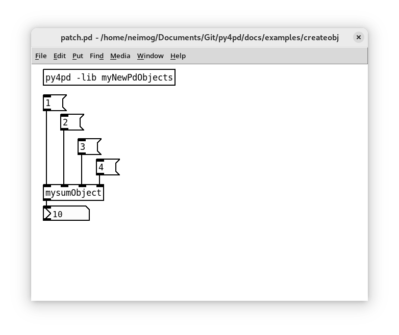
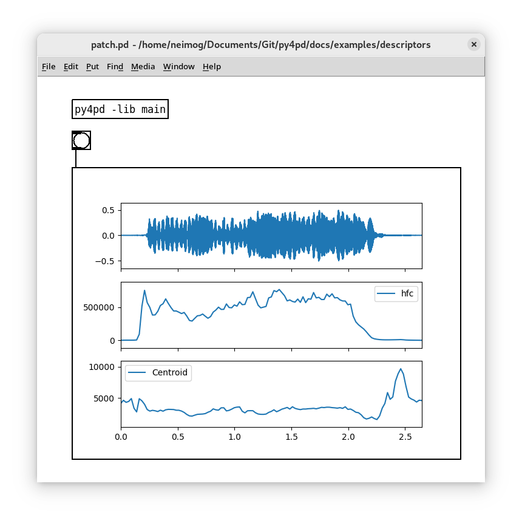
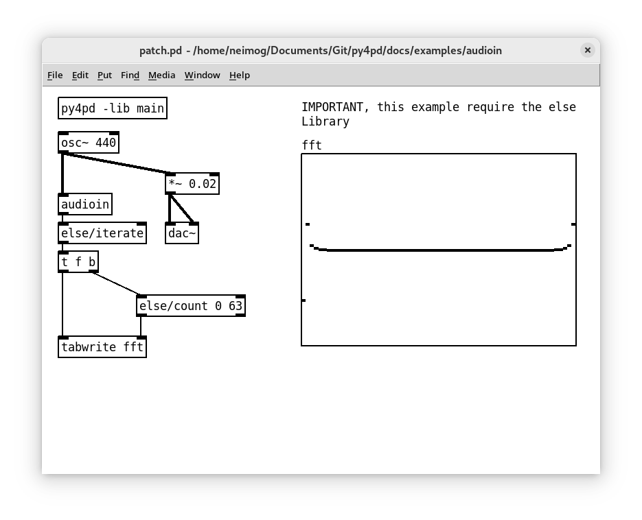
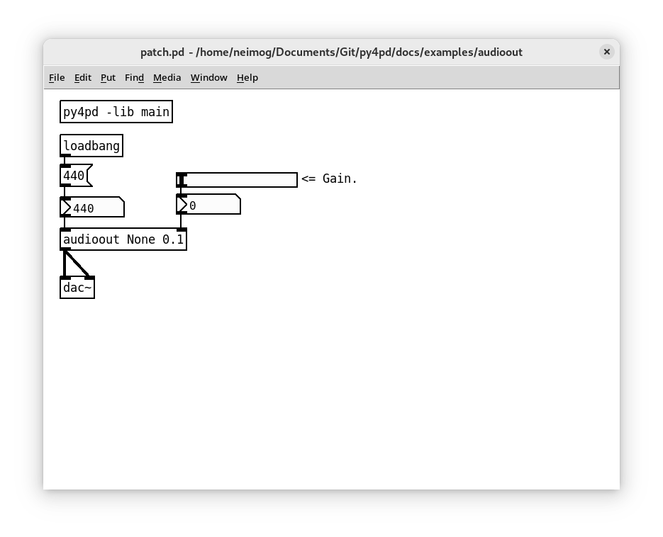
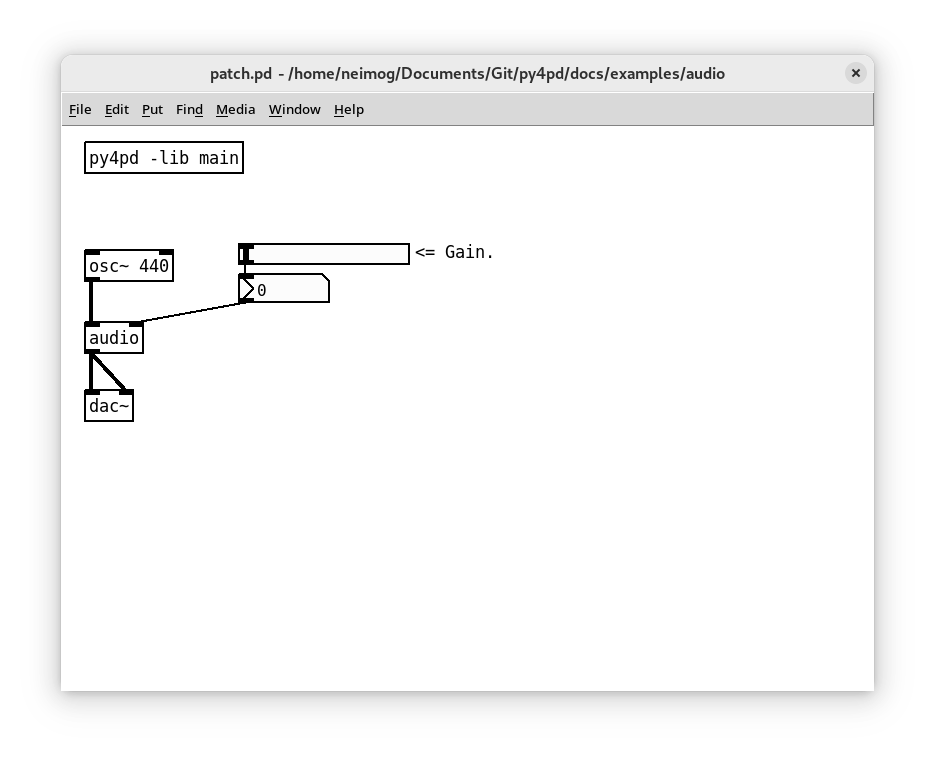

Python Users
If you're using Python and PureData together, you can use the pd module within the py4pd package to exchange data, set configurations, and inform users of errors, among other things. This module is embedded in the py4pd code and is only accessible within the py4pd environment. It's similar to how Google Collab uses modules like google.collab.drive and google.collab.widgets. In the next section I present all the methods that are embbeded.
Pd Objects with Python
With the py4pd it is possible to create new PureData objects using Python. For that, you need to declare your Python functions and then create a function called py4pdLoadObjects. Inside this function we use pd.addobject (check the docs) to add all functions that you want to use as objects.
See the Python Code:
import pd
def mysumObject(a, b, c, d):
return a + b + c + d
def py4pdLoadObjects():
pd.addobject(mysumObject, "mysumObject") # function, string with name of the object
# My License, Name and University, others information
pd.print("", show_prefix=False)
pd.print("GPL3 | by Charles K. Neimog", show_prefix=False)
pd.print("University of São Paulo", show_prefix=False)
pd.print("", show_prefix=False)
In the code above, we create a new object called mysymObject. It is saved inside an script called myNewPdObjects.py. To load this script in PureData how need to follow these steps:
- Copy the script
myNewPdObjects.pyfor the folder where your PureData patch is. - Create a new
py4pdwith this config:py4pd -lib myNewPdObjects. - Create the new object, in this case
mysumObject.
Following this steps we have this patch:

Types of Objects
In the example above we create ordinary objects. With py4pd we can create 5 types of objects:
Used to create functions like sum numbers, convertion between datas (svg to scores, for example), etc.
Used to create functions to show something. Like Scores, Audio descriptors, and others.
To create vis object, in pd.addobject we add the objtype=pd.VIS. Inside the function, we always need the pd.show method, without it, anything will be showed.
For pd.VIS objects, we have some options in pd.addobject.
figsize: It set the size of the figure that will be showed, this is more for aesthetic reasons (the figure will always be resized).
See the example:
Python Code
import pd
import audioflux as af
import matplotlib.pyplot as plt
from audioflux.display import fill_plot, fill_wave
from audioflux.type import SpectralFilterBankScaleType, SpectralDataType
import numpy as np
def descriptors():
audio_arr, sr = af.read(pd.home() + "/Hp-ord-A4-mf-N-N.wav")
bft_obj = af.BFT(num=2049, samplate=sr, radix2_exp=12, slide_length=1024,
data_type=SpectralDataType.MAG,
scale_type=SpectralFilterBankScaleType.LINEAR)
spec_arr = bft_obj.bft(audio_arr)
spec_arr = np.abs(spec_arr)
spectral_obj = af.Spectral(num=bft_obj.num,
fre_band_arr=bft_obj.get_fre_band_arr())
n_time = spec_arr.shape[-1] # Or use bft_obj.cal_time_length(audio_arr.shape[-1])
spectral_obj.set_time_length(n_time)
hfc_arr = spectral_obj.hfc(spec_arr)
cen_arr = spectral_obj.centroid(spec_arr)
fig, ax = plt.subplots(nrows=3, sharex=True)
fill_wave(audio_arr, samplate=sr, axes=ax[0])
times = np.arange(0, len(hfc_arr)) * (bft_obj.slide_length / bft_obj.samplate)
fill_plot(times, hfc_arr, axes=ax[1], label='hfc')
fill_plot(times, cen_arr, axes=ax[2], label="Centroid")
tempfile = pd.tempfolder() + "/descritores.png"
plt.savefig(tempfile)
pd.show(tempfile)
pd.print("Data plotted")
def py4pdLoadObjects():
pd.addobject(descriptors, "descritores", objtype=pd.VIS, figsize=(640, 480))

Used to output analised data from audio. Objects with Partial Trackings, Audio Descriptors, and others.
To create Audio In object, in pd.addobject we add the objtype=pd.AUDIOIN.
The first inlet of this objects always need to be audio

Python Code
import pd
import numpy
def audioin(audio):
fft = numpy.fft.fft(audio)
fft = numpy.real(fft)
return fft.tolist() # numpy can just be outputed when pyout=True
def py4pdLoadObjects():
pd.addobject(audioin, "audioin", objtype=pd.AUDIOIN)
Used to create audio using Python. Objects that creates sinusoids, some special noise and others.
To create Audio out object, in pd.addobject we add the objtype=pd.AUDIOOUT.

Python Code
import pd
import numpy
def audioin(audio):
fft = numpy.fft.fft(audio)
fft = numpy.real(fft)
return fft.tolist() # numpy can just be outputed when pyout=True
def py4pdLoadObjects():
pd.addobject(audioin, "audioin", objtype=pd.AUDIOIN)
Used to manipulations of Audio. FFT, reverbs, and others.
To create Audio object (audio input and output), in pd.addobject we add the objtype=pd.AUDIO.

Python Code
import pd
import numpy
def audio(audio, amplitude):
if amplitude is None:
amplitude = 0.2
audio = numpy.multiply(audio, amplitude)
return audio
def py4pdLoadObjects():
pd.addobject(audio, "audio", objtype=pd.AUDIO)
Embbeded Module with py4pd
py4pd Write PureData Objects
pd.addobject
pd.addobject You can create your own objects with Python. For that, you define the Python Function and add it as an object using pd.addobject().
Breaking Changes
I had change how pd.addobject work from version 0.6 to version 0.7. Now, me use the function and the Pure Data object. Instead of use this, pd.addobject("mysumObject", "NORMAL", "myNewPdObjects", "mysumObject") we use this pd.addobject(mysumObject, "mysumObject").
| Parameters | Type | Description |
|---|---|---|
arg1 |
Python Function |
Function that will be executed by the object. |
arg2 |
String |
String to create the object. |
| Keyword | Type | Description |
|---|---|---|
objtype |
pd |
The type of the object: pd.VIS, pd.AUDIO, pd.AUDIOIN, or pd.AUDIOOUT. Hiding this option will create a normal object. |
figsize |
Tuple |
Sets the pixel size of the object. Example: figsize=(400, 200) creates an object with a width of 400 and height of 200. |
pyout |
Boolean |
Determines whether the output will be in PureData data types or Python. If set to Python, it cannot be used by PureData. |
no_outlet |
Boolean |
Creates an object with no outlets if set to True. |
added2pd_info |
Boolean |
Prints the message "[py4pd]: Object {objectName} added to PureData" when set to True. |
pd.addobject(myFunction, "mypyobj",
objtype=pd.VIS, figsize=(400, 200),
pyout=True, no_outlet=False, added2pd_info=False)
import pd
def mysumObject(a, b, c, d):
return a + b + c + d
def py4pdLoadObjects():
pd.addobject(mysumObject, "mysumObject")
# My License, Name and University, others information
pd.print("", show_prefix=False)
pd.print("GPL3 2023, Your Name", show_prefix=False)
pd.print("University of São Paulo", show_prefix=False)
pd.print("", show_prefix=False)
Here we add the function mysumObject in PureData enviroment. For more infos read the Python Objects page.
Exchanging Data
These are the methods used to send data from Python to PureData. The inverse path is done mainly with run and key messages.
pd.out
pd.out pd.out() allows you to output data to PureData without needing to wait for the Python function to finish executing. This is different from returning data to PureData using the return statement, which requires the function to complete before sending data.
| Parameters | Type | Description |
|---|---|---|
arg1 |
Python Object |
Python thing that will be outputed. |
| Parameters | Type | Description |
|---|---|---|
symbol |
string |
It prepend the string in the output, can be used with route object. |
For example, consider the following function:
import pd
def example_pdout():
for x in range(10):
pd.out(x, symbol="loop")
pd.out("fim", symbol="end")
pd.send
pd.send You can use pd.send to send data to a receive object in your PureData patch. This method takes in two arguments: the name of the receive object and the value you want to send. For instance, suppose you have a receive object named "myReceiver" in your patch. To send the value 42 to this object, you could use pd.send("myReceiver", 42).
| Parameters | Type | Description |
|---|---|---|
arg1 |
string |
Name of the receive object. |
arg2 |
Python Object |
Data that will be sent. |
import pd
def pd_send():
"It sends a message to the py4pdreceiver receive."
pd.send("py4pdreceiver", "hello from python!")
pd.send("py4pdreceiver", 1)
pd.send("py4pdreceiver", [1, 2, 3, 4, 5])
return 0
In this example, it will send to py4pdreceiver the message "hello from python!", then the number 1, then the list [1, 2, 3, 4, 5].
pd.tabwrite
pd.tabwrite pd.tabwrite is a method that is essentially a copy of the tabwrite object in PureData. With this method, you can write audio or any data supported to PureData array.
| Parameters | Type | Description |
|---|---|---|
arg1 |
string |
Name of the table. |
arg2 |
Python Object |
List or array (numpy) of numbers. |
| Keyword | Type | Description |
|---|---|---|
rezise |
Boolean |
Set if the table will be resized or not. |
pd.tabwrite("table2test", randomNumbers, resize=True)
pd.tabread
pd.tabread pd.tabread is a method that is essentially a copy of the tabread object in PureData. With this method, you can read data from a PureData array directly from within your Python code. It will return one Numpy Array with the data of the table.
| Parameters | Type | Description |
|---|---|---|
arg1 |
string |
Name of the table. |
import pd
def readFromArray():
valuesFromArray = pd.tabread("py4pdArray")
return valuesFromArray # This code don't make any sense :), but you understand it.
pd.getkey
pd.getkey With pd.getkey, you can retrieve the value of a specific key that has been set by the user in a key message to py4pd objects. For example, if the user sends a key message to py4pd with the name "fft-size" and a value of 1024, you can retrieve this value in your Python code using pd.getkey("fft-size"). If the user hasn't defined a particular key, pd.getkey will return None, allowing you to set a default value if necessary.
| Parameters | Type | Description |
|---|---|---|
arg1 |
string |
Name of the key. |
import pd
def someAudioFunction(audio): # (1)!
fftvalue = pd.getkey("fft-size")
if fftvalue is None:
fftvalue = 2048 # default value for fft-size key.
# Do something with the audio.
return myGreatAudioManipulation
- Remember, audio functions that run with
py4pd script myaudiofunction -audioreceive just oneargthat is the audio. In Audio objects written in Python this is different.
Info for the user
There are two messages used to print info in the PureData console, they are pd.print and pd.error.
pd.print
pd.print The ordinary function print() will not work in py4pd (unless that you open PureData from the terminal). So if you want to debug or print some info from the PureData console you need to use pd.print.
| Parameters | Type | Description |
|---|---|---|
arg1 |
Python Object |
Thing to print |
| Parameters | Type | Description |
|---|---|---|
show_prefix |
Python Object |
When False it remove the string "[Python]" from the begin of the message |
import pd
pd.print("ok") # It prints "[Python] ok"
pd.print("ok", show_prefix=False) # It prints "ok".
pd.error
pd.error If you want to inform errors in PureData console use pd.error method.
| Parameters | Type | Description |
|---|---|---|
arg1 |
string |
Message of the error. |
import pd
def main(arg1):
if isinstance(arg1, list):
for i in range(1, 10):
try:
# some wrong arg here ????
except:
pd.error("This is a not valid operation")
Utilities
pd.getstrpointer
pd.getstrpointer When working with audio objects, there are situations where we require global variables or variables that retain their values across different runs. For instance, when creating a Python function to generate a sine wave, we may need a global variable for the phase in order to generate a continuous waveform. However, using Python Global Variables can be problematic when working with multiple objects, as all functions would modify the phase value, potentially overwriting it unintentionally. To address this issue, we introduced the pd.getobjpointer function, which returns a unique string representing the pointer of the C object. This string is unique and can be utilized in other contexts to locate and retrieve the desired global variable.
There is no args for this function.
It just returns unique string.
import pd
print(pd.getstrpointer())
pd.getglobalvar
pd.getglobalvar When working with audio objects, we have another helpful function called pd.getglobalvar. This function serves a similar purpose to pd.getobjpointer. Here, it creates the variable automatically if it doesn't exist yet.
| Parameters | Type | Description |
|---|---|---|
arg1 |
string |
Object Variable Name. |
| Parameters | Type | Description |
|---|---|---|
initial_value |
Python Object |
With initial_value you can set one initial value for the string. |
In the code snippet below, when we use pd.getglobalvar("PHASE"), it retrieves the value of the variable associated with the current running object. If the value hasn't been set yet, it will be initialized to 0.0.
phase = pd.getglobalvar("PHASE", initial_value=0.0)
pd.setglobalvar
pd.setglobalvar To set new values for the variable of the object we use pd.setglobalvar. In audio objects, for example, this value you be saved for the next block calculation.
| Parameters | Type | Description |
|---|---|---|
arg1 |
string |
Object Variable Name. |
arg2 |
Python Object |
Any Python Object. |
pd.setglobalvar("PHASE", phase)
Images
pd.show
pd.show With py4pd you can display images inside PureData patches using Python, you can use the pd.show method. This method is essentially a copy of the else/pic object, but with an interface that allows you to easily show images from within your Python code.
Supported extensions
You can just use .png, .gif, and .ppm image formats.
| Parameters | Type | Description |
|---|---|---|
arg1 |
string |
Pathname for the image that will be showed. |
This is a big code, but I like it.
import pd
from random import randint
import os
try:
from neoscore.common import *
except Exception as e:
pd.error(str(e))
pd.error(
"Please, run 'pip install neoscore -t ./py-modules' in the terminal from current folder")
def getpitchKey(pitch):
note = {
# natural
'c': ['c', ''],
'd': ['d', ''],
'e': ['e', ''],
'f': ['f', ''],
'g': ['g', ''],
'a': ['a', ''],
'b': ['b', ''],
# sharp
'c#': ['c', 'accidentalSharp'],
'd#': ['d', 'accidentalSharp'],
'e#': ['e', 'accidentalSharp'],
'f#': ['f', 'accidentalSharp'],
'g#': ['g', 'accidentalSharp'],
'a#': ['a', 'accidentalSharp'],
'b#': ['b', 'accidentalSharp'],
# flat
'cb': ['c', 'accidentalFlat'],
'db': ['d', 'accidentalFlat'],
'eb': ['e', 'accidentalFlat'],
'fb': ['f', 'accidentalFlat'],
'gb': ['g', 'accidentalFlat'],
'ab': ['a', 'accidentalFlat'],
'bb': ['b', 'accidentalFlat'],
}
return note[pitch]
def chord(pitches):
try:
neoscore.shutdown()
except BaseException:
pass
neoscore.setup()
py4pdTMPfolder = pd.tempfolder()
for file in py4pdTMPfolder:
if file.endswith(".ppm"):
try:
os.remove(py4pdTMPfolder + "/" + file)
except BaseException:
pass
staffSoprano = Staff((Mm(0), Mm(0)), None, Mm(30))
trebleClef = 'treble'
Clef(ZERO, staffSoprano, trebleClef)
staffBaixo = Staff((ZERO, Mm(15)), None, Mm(30))
bassClef = 'bass'
Clef(ZERO, staffBaixo, bassClef)
Path.rect((Mm(-10), Mm(-10)), None, Mm(42), Mm(42),
Brush(Color(0, 0, 0, 0)), Pen(thickness=Mm(0.5)))
for pitch in pitches:
# in pitch remove not number
pitchWithoutNumber = pitch.replace(pitch[-1], '')
pitchOctave = int(pitch[-1])
pitchClass, accidental = getpitchKey(pitchWithoutNumber)
note = [(pitchClass, accidental, pitchOctave)]
if pitchOctave < 4:
Chordrest(Mm(5), staffBaixo, note, (int(1), int(1)))
else:
Chordrest(Mm(5), staffSoprano, note, (int(1), int(1)))
randomNumber = randint(1, 100)
notePathName = py4pdTMPfolder + "/" + pitch + f"{randomNumber}.ppm"
neoscore.render_image(rect=None, dest=notePathName, dpi=150, wait=True)
neoscore.shutdown()
if os.name == 'nt':
notePathName = notePathName.replace("\\", "/")
pd.show(notePathName) ## HERE THE pd.show
return None

File Management
pd.home
pd.home In py4pd, pd.home is a function that returns the path to the directory where the currently-running PureData patch is located. This can be useful for accessing files and resources relative to the location of the patch.
There is no args for this function.
It just returns unique string with the pathname.
import pd
print(pd.home())
pd.tempfolder
pd.tempfolder pd.tempfolder returns one pathname to save stuff that won't be used more than once, all files inside this folder are deleted when the PureData patch is closed.
There is no args for this function.
It just returns unique string.
import pd
print(pd.tempfolder())
pd.py4pdfolder
pd.py4pdfolder pd.py4pdfolder returns the folder where the binary of py4pd is located.
There is no args for this function.
It just returns unique string.
import pd
print(pd.py4pdfolder())
Audio Info
pd.samplerate
pd.samplerate This get the current samplerate of PureData. You can use the pd.SAMPLERATE variable too.
There is no args for this function.
It just returns unique string.
import pd
print(pd.samplerate())
pd.vecsize
pd.vecsize This get the current vectorsize/blocksize of PureData. You can use the pd.VECSIZE variable too.
There is no args for this function.
It just returns unique string.
import pd
print(pd.vecsize())